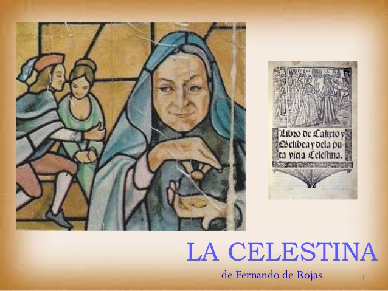

UN RESUMEN BREVE: LA CELESTINA DE FERNANDO DE ROJAS
BIENVENIDOS
Aqui podran conocer todo acerca de los personajes de LA CELESTINA y sobre su autor FERNANDO DE ROJAS
La Tragicomedia de Calisto y Melibea mejor conocida por su nombre moderno, La Celestina. Fue publicada en el año 1499 y actuo como una gran influencia para la literatura española en el siglo XV. Es una obra constituida por 21 actos pero en la primera version solo existian 16 actos. Su autor es conocido como Fernando de Rojas pero se dice que este encontro unos actos de dicha obras y decidio continuarlos él. Es una obra que involucra hechiceria, amor y tragedias.
En esta epoca en la cual se dice que se escribio La Celestina, se dice que habia mucha presencia en las creencias magicas, y eran muy asociadas con los demonios. Por esto es que en la obra muchas de las cosas establecidas de una manera u otra tienen que ver con lo que pasa en la vida real en España.